Перинатальная психология — это направление, изучающее психологические аспекты беременности, родов, материнства и перинатальных потерь. Профессия перинатального психолога востребована в перинатальных центрах, клиниках, а также при сопровождении беременности и оказании психологической поддержки женщинам. Обучение на перинатального психолога проходит в удобных форматах, включая дистанционные курсы, и предполагает получение профессиональной переподготовки. Студенты изучают психологические аспекты репродуктивной сферы, осваивают навыки консультирования, практические методы психотерапии, методы психологической диагностики и сопровождения беременных. Мы составили рейтинг программ, где обучение проводится с выдачей диплома установленного образца.
Информация обновлена:
ТОП онлайн-курсов по перинатальной психологии
- 🏆 Перинатальный психолог — МИП (по промокоду kursy скидка 🎁 10%)
- 🏆 Психолог-консультант с дополнительной специализацией в области перинатальной психологии и психотерапии — НАДПО (по промокоду onlinekursy действует скидка 🎁 5%)
- 🏆 Перинатальная психология — Онлайн институт Smart
- Перинатальная психология — МШПП
- Психолог-консультант с дополнительной специализацией в области перинатальной психологии и психотерапии — МИПО (по промокоду onlinekursy действует скидка 🎁 10%)
- Клиническая (медицинская) психология со специализацией в перинатальной психологии — АНО «НИИДПО»
- Перинатальная психология — ИПО
- Перинатальная психология с присвоением квалификации перинатального психолога — НЦРДО (по промокоду onlinekursy действует скидка 🎁 5%)
- Перинатальная психология с присвоением квалификации «Перинатальный психолог» — ЦАППКК (по промокоду onlinekursy действует скидка 🎁 5%)
- «Перинатальная психология» с присвоением квалификации «Перинатальный психолог» — НАДПО (по промокоду onlinekursy действует скидка 🎁 5%)
- Практическая перинатальная психология. Социально-психологическое сопровождение беременности, родов и послеродового периода — НАДПО (по промокоду onlinekursy действует скидка 🎁 5%)
- Перинатальный психолог. Социально-психологическое сопровождение беременности, родов и послеродового периода — АНО «НИИДПО»
- Перинатальный тренинг и послеродовое восстановление — АНО «НИИДПО»
- Практическая перинатальная психология. Социально-психологическое сопровождение беременности, родов и послеродового периода — НЦРДО (по промокоду onlinekursy действует скидка 🎁 5%)
- Перинатальная психология — НЦПО
Бесплатные курсы по обучению на перинатального психолога
- Перинатальная психология: дистанционный курс бесплатно — Институт практической психологии «Иматон»
- Перинатальная психология, бесплатно — Спроси психолога ВКонтакте
Отличительные преимущества каждой дистанционной программы обучения по перинатальной психологии
| № | Название курса | Преимущества | |
|---|---|---|---|
| 🥇 | Перинатальный психолог – МИП | Диплом международного образца, 1310 ч., глубокая практика, супервизии, поддержка трудоустройства | Перейти |
| 🥈 | Психолог-консультант – НАДПО | 2030 ч., диплом ФГОС, карьерный центр, 30% практики, супервизии в тройках | Перейти |
| 🥉 | Перинатальная психология – Smart | 4 мес., повышение квалификации, проект SmartMental, доступ 24/7 | Перейти |
| 4 | Перинатальная психология – МШПП | MBA-диплом, карьерный центр, акцент на практике и брендировании, супервизии | Перейти |
| 5 | Психолог-консультант – МИПО | 1106 ч., ФИС-ФРДО, арт-терапия, диплом, онлайн-обратная связь | Перейти |
| 6 | Клиническая психология + перинатальная – НИИДПО | 17 мес., двойной диплом, 13000+ вебинаров, мобильное приложение | Перейти |
| 7 | Перинатальная психология – ИПО | MBA, 560 ч., гибкая рассрочка, кейсы, онлайн-платформа, ФРДО | Перейти |
| 8 | Перинатальная психология с квалификацией – НЦРДО | 1020 ч., диплом ФРДО, HR-поддержка, доступ к ЛитРес, гибкий график | Перейти |
| 9 | Перинатальная психология – ЦАППКК | Минимальная цена, 1020 ч., поддержка HR-наставника, бессрочный доступ | Перейти |
| 10 | Перинатальная психология с квалификацией – НАДПО | 660+ ч., диплом, кэшбэк, супервизии, обратная связь, ЛитРес | Перейти |
| 11 | Практическая перинатальная психология – НАДПО | 360 ч., 2 курса по цене одного, психологическое сопровождение, видеолекции | Перейти |
| 12 | Перинатальный психолог – НИИДПО | 3 мес., 13000+ вебинаров, частная практика, супервизии, карьерная поддержка | Перейти |
| 13 | Перинатальный тренинг и восстановление – НИИДПО | 5–7 недель, восстановление после родов, диастаз, тейпирование, ЛФК | Перейти |
| 14 | Практическая перинатальная психология – НЦРДО | 450 ч., 4 мес., психотерапия, диагностика, послеродовые состояния, супервизии | Перейти |
| 15 | Перинатальная психология – НЦПО | от 250 до 1600 ч., бессрочный диплом, практика с клиентами, доступ 24/7 | Перейти |
1. 🏆 Перинатальный психолог – Московский институт психологии
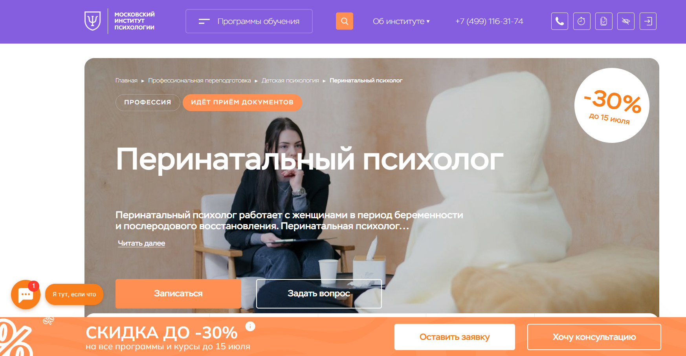
- ✅ Официальный сайт: mip.institute
- 💸 Цена: 92 528 ₽ (со скидкой 30%)
- 💳 Рассрочка: 7 700 ₽ в месяц на 12 месяцев без переплат
- 📚 Формат: дистанционное обучение с видеоуроками, онлайн-тестами, проектами, практикумами и супервизиями
- ⏳ Продолжительность: 9 месяцев (1310 часов)
- 📜 Документ: диплом о профессиональной переподготовке с международным приложением
- 📝 Трудоустройство: курс позволяет начать частную практику и актуализировать знания
- 🔷 Для кого подходит курс: начинающим специалистам, практикующим без диплома, людям, интересующимся психологией для себя
Особенности:
Программа направлена на формирование навыков консультирования беременных и сопровождения женщин на разных этапах беременности и после родов. Курс полностью дистанционный, что позволяет обучаться в удобном формате, совмещая обучение с работой. Освоение методов психотерапии, диагностики и поддержки клиентов включает как теоретические, так и практические блоки. Поддержка куратора, разбор кейсов и супервизии дают возможность развивать навыки практической перинатальной работы. Образовательный процесс выстроен по международным стандартам, а диплом признается за границей.
Чему учатся студенты:
- Оказывать психологическую поддержку в перинатальных центрах
- Применять методы психотерапии при бесплодии и перинатальных потерях
- Проводить психологическую диагностику состояния беременных
- Подготавливать женщин к родам и материнству
- Работать с эмоциональными состояниями после рождения ребёнка
- Консультировать в сфере репродуктивной психологии
- Анализировать психологические аспекты беременности и послеродового восстановления
Преподаватели:
- Сергачева Ксения Викторовна — практический психолог, арт-терапевт, автор учебных пособий и методик
- Галеева Елена Евгеньевна — клинический и перинатальный психолог, гипнотерапевт, НЛП-мастер
Преимущества:
- Гибкий дистанционный формат обучения
- Диплом с международным признанием
- Актуальные темы и реальные кейсы
- Поддержка кураторов и преподавателей в процессе обучения
- Возможность совмещать обучение с работой
- Платформа с доступом к материалам 24/7
- Участие в профессиональном сообществе
- Поддержка трудоустройства и развитие частной практики
Отзывы учеников:
Студенты хвалят курс за практическую направленность и доступность материалов. Отмечают профессионализм преподавателей, удобную онлайн-платформу и поддержку кураторов. Многим особенно полезным оказался опыт разбора реальных клиентских кейсов и получение знаний по психологии материнства и сопровождению беременности.
Перейти на официальный сайт курса2. 🏆 Психолог-консультант с дополнительной специализацией в области перинатальной психологии и психотерапии — Национальная академия дополнительного профессионального образования
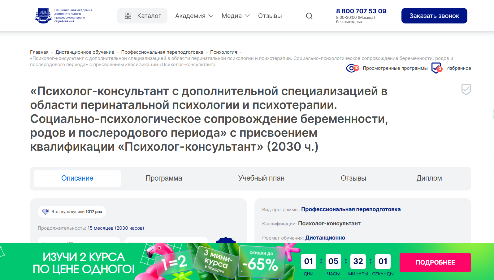
- ✅ Официальный сайт: nadpo.ru
- 💸 Цена: 80 300 ₽ ( без скидки — 104 400 ₽).
- 💳 Рассрочка: от 6 692 ₽/мес, возможна на 24 или 36 месяцев.
- 📚 Формат: дистанционный формат, видеолекции, практикумы, групповые супервизии, доступ к библиотекам ЛитРес и БиблиоКлуб.
- ⏳ Продолжительность: 15 месяцев (2030 часов).
- 📜 Документ: диплом о профессиональной переподготовке, соответствующий ФГОС.
- 📝 Трудоустройство: поддержка от HR-наставника, предложения от партнёров уже во время прохождения обучения.
- 🔷 Для кого подходит курс: для специалистов с высшим или средним профессиональным образованием, интересующихся психологическим сопровождением беременности, родов и послеродового периода.
Особенности:
Программа дает слушателям возможность получить востребованную квалификацию дистанционно, сочетая обучение с работой или личными делами. Более 30% времени уделяется практическим занятиям, в том числе групповым супервизиям и отработке ролей в тройках. Слушатели изучают клиническую и перинатальную психологию, методы психотерапии и консультирования. Обучение построено на современных образовательных технологиях и подходит для любого уровня подготовки. Выпускники осваивают навыки консультирования беременных, работы с перинатальными потерями, постабортным сопровождением и психологической поддержкой семей. Программа одобрена и соответствует государственным образовательным стандартам.
Чему учатся студенты:
- Психологическому сопровождению беременности и родов
- Работе с перинатальными потерями и бесплодием
- Консультированию в вопросах репродуктивной психологии
- Методам психологической помощи в послеродовом периоде
- Навыкам индивидуального и семейного консультирования
- Организации групповых тренингов и супервизий
Преподаватели:
- Зотова Мария Юрьевна — магистр психоаналитического бизнес-консультирования, научный руководитель курса, основатель группы компаний НАДПО
- Тарасов Сергей Васильевич — кандидат психологических наук, доцент, стаж с 2000 года
- Егорова Наталья Николаевна — кандидат психологических наук, более 22 лет стажа
- Челнокова Ирина Александровна — кандидат психологических наук, член Российской ассоциации КПТ
- Санжапова Эльмира Викторовна — кандидат педагогических наук, доцент
Преимущества:
- Удобный дистанционный формат обучения с доступом из любого региона
- Возможность совмещать обучение с работой или декретом
- Поддержка преподавателей и обратная связь по заданиям
- Обширная практика: реальные кейсы, супервизии, отработка сессий
- Доступ к электронным библиотекам и дополнительным материалам
- Профессиональная подготовка, соответствующая стандартам ФГОС
- Востребованная квалификация на рынке труда
Отзывы учеников:
Студенты отмечают высокое качество дистанционного обучения и профессиональный состав преподавателей. Многим нравится удобный график и практическая направленность курса. Особенно ценят обратную связь от кураторов и возможность применять знания сразу после начала обучения.
Перейти на официальный сайт курса3. 🏆 Перинатальная психология – Онлайн институт Smart
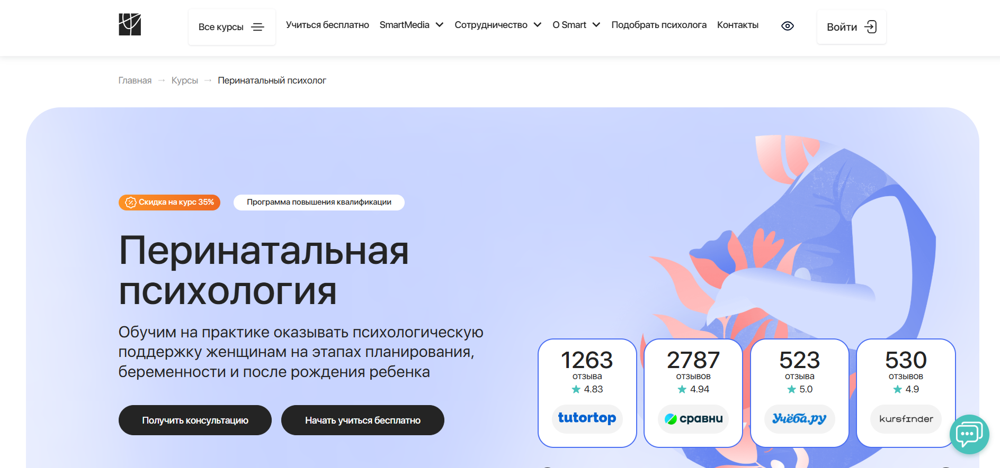
- ✅ Официальный сайт: smart-inc.ru
- 💸 Цена: 29 900 ₽ (со скидкой 35%)
- 💳 Рассрочка: от 2 492 ₽/месяц на 3, 6 или 12 месяцев
- 📚 Формат: дистанционный формат, видеолекции, практические задания, тесты, супервизии
- ⏳ Продолжительность: 4 месяца, 200 академических часов
- 📜 Документ: удостоверение о повышении квалификации
- 📝 Трудоустройство: участие в проекте SmartMental, предоставление клиентов, карьерный центр
- 🔷 Для кого подходит курс: клиническим психологам, специалистам репродуктивной сферы, женщинам на этапе беременности, начинающим консультантам, доулам
Особенности:
Программа направлена на освоение практической перинатальной психологии с акцентом на психологические аспекты материнства и сопровождение беременных женщин. Обучение проходит на современной образовательной платформе с круглосуточным доступом к материалам. Студенты проходят дистанционные курсы, осваивая методы психологического консультирования и сопровождения семей в разных этапах родительства. Программа включает 6 модулей и практикумы, что помогает формировать навыки консультирования в сфере репродуктивной психологии и работать с перинатальными потерями. По окончании обучения выдается государственное удостоверение. Участие в супервизиях и карьерная поддержка доступны всем слушателям. Обучение проводится в дистанционном формате с акцентом на освоение практических навыков консультирования беременных и молодых мам.
Чему учатся студенты:
- Оказывать психологическую поддержку женщинам в период беременности и после родов
- Работать с психосоматикой и нарушениями, связанными с родами
- Проводить психологическую диагностику и консультирование беременных
- Сопровождать программы ЭКО и случаи перинатальных потерь
- Понимать бессознательные стратегии защиты и нарушения идентичности
- Развивать стрессоустойчивость и эмоциональную стабильность у клиентов
Преподаватели:
- Оксана Бельтюкова — кандидат педагогических наук, клинический психолог, более 20 лет опыта, автор 50+ научных публикаций
- Ирина Гребенкина — преподаватель, эксперт по психологическому консультированию и перинатальным вопросам
Преимущества:
- Программа повышения квалификации признана на государственном уровне
- Дистанционный формат обучения с доступом 24/7
- Поддержка и коучинг от экспертов во время и после обучения
- Возможность вступить в ОППЛ и АППП на льготных условиях
- Практика с реальными клиентами уже во время курса
- Современные методы психотерапии и психологической диагностики
- Поддержка карьерного центра и участие в профсообществе
- Групповые супервизии и живые эфиры с преподавателями
Отзывы учеников:
Студенты хвалят качество дистанционного обучения и удобную структуру подачи материала. Особенно отмечают возможность применять практические методы в реальных ситуациях, участие в супервизиях и активную поддержку от преподавателей. Положительно отзываются о гибкости графика и возможности совмещать обучение с работой или материнством.
Перейти на официальный сайт курса4. Перинатальная психология — МШПП (Московская школа практической психологии)
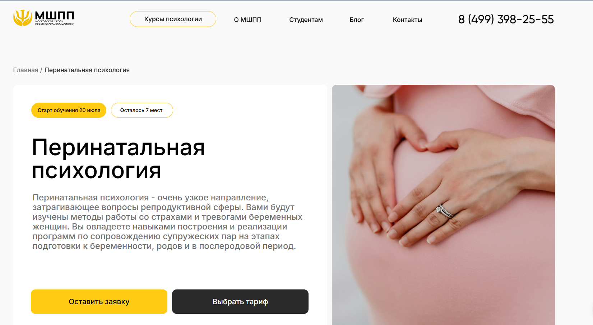
- ✅ Официальный сайт: mspp.online
- 💸 Цена: от 90 000 ₽ (есть экономия 13% при налоговом вычете)
- 💳 Рассрочка: от 2 500 ₽/мес, доступны планы от 3 до 36 месяцев
- 📚 Формат: дистанционный формат обучения, включает видеолекции, практические задания, супервизии, семинары, домашние работы, доступ к онлайн-платформе
- ⏳ Продолжительность: 6 месяцев, включая итоговую аттестацию
- 📜 Документ: диплом о профессиональной переподготовке, международный диплом MBA (в тарифе «Эксперт»)
- 📝 Трудоустройство: сопровождение Карьерным центром: помощь в составлении резюме, прохождении собеседований, поиске вакансий
- 🔷 Для кого подходит курс: начинающим и практикующим психологам, выпускникам вузов, специалистам в поиске новой профессии, тем, кто хочет работать с аспектами беременности и материнства
Особенности:
Программа охватывает психологические аспекты беременности, родов и послеродового периода, включая работу с перинатальными потерями и психосоматикой. Учебный процесс построен на современных подходах дистанционного образования: видеолекции, задания, супервизии и реальная практика. Студенты изучают репродуктивную психологию и получают навыки консультирования беременных женщин. Весь курс проходит в удобном онлайн-формате на собственной платформе школы. Материалы доступны круглосуточно, обучение можно совмещать с работой. Диплом выдается на основании государственной лицензии, что позволяет официально работать и открывать частную практику.
Чему учатся студенты:
- Оказывать психологическую поддержку женщинам на этапе беременности и после родов
- Работать с перинатальными утратами и репродуктивными трудностями
- Применять методы арт-терапии в работе с женщинами и парами
- Проводить психологическую диагностику готовности к родительству
- Использовать техники онлайн-консультирования
- Создавать индивидуальные программы сопровождения семей
Преподаватели:
- 42 эксперта — практикующие клинические психологи, психотерапевты, супервизоры, авторы программ
- Кураторы и преподаватели — дипломированные специалисты с опытом консультирования в сфере перинатальной и клинической психологии
Преимущества:
- Сильный акцент на практических навыках консультирования
- Возможность получить международный диплом MBA
- Программа подходит для смены профессии и начала карьеры с нуля
- Доступ к онлайн-кабинету психолога «под ключ»
- Групповые супервизии и практика в тройках
- Разнообразные форматы занятий — видеоуроки, очные встречи, семинары
- Поддержка от Карьерного центра на всех этапах
- Дополнительный модуль по продвижению личного бренда
Отзывы учеников:
Студенты МШПП особенно хвалят насыщенную практику, работу в мини-группах и индивидуальный подход. Отмечают профессионализм преподавателей и возможность применять полученные знания уже в процессе обучения. Высокая вовлеченность кураторов и постоянная обратная связь помогают добиться уверенности и начать частную практику после завершения курсов.
Перейти на официальный сайт курса5. Психолог-консультант с дополнительной специализацией в области перинатальной психологии и психотерапии – Московский институт профессионального образования
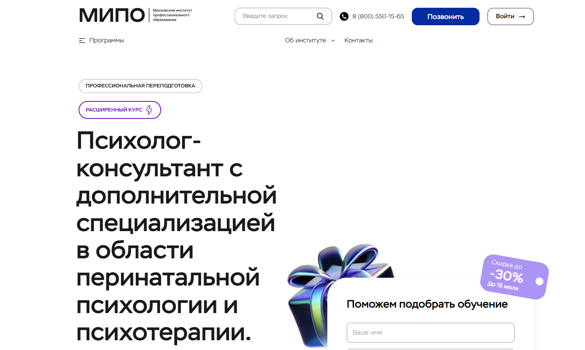
- ✅ Официальный сайт: mipo.msk.ru
- 💸 Цена: от 65 969 ₽ (доступна скидка до 30%)
- 💳 Рассрочка: от 2 750 ₽/мес на 24 месяца
- 📚 Формат: дистанционный формат: лекции, вебинары, практические задания, тесты, обратная связь, онлайн-чат, видеоуроки, сопровождение куратора
- ⏳ Продолжительность: 1 год 1 месяц, 1106 академических часов
- 📜 Документ: диплом о профессиональной переподготовке, внесён в ФИС-ФРДО
- 📝 Трудоустройство: курс открывает возможность официальной практики, частного консультирования и карьерного роста в сфере психологии
- 🔷 Для кого подходит курс: для начинающих, практикующих специалистов, желающих получить диплом, и тех, кто изучает психологию для себя
Особенности:
Программа обучения сочетает теоретическую базу и практические навыки в удобных форматах. Слушатели изучают аспекты перинатальной психологии и психотерапии, методы консультирования беременных, сопровождение семей в послеродовом периоде. Дистанционное обучение позволяет совмещать процесс обучения с работой и личной жизнью. Особое внимание уделяется таким темам, как перинатальные утраты, репродуктивная психология, послеродовые состояния. Обучение проходит на онлайн-платформе с возможностью пересмотра материалов и поддержкой персонального куратора. После окончания курса выпускники получают диплом установленного образца с регистрацией в ФИС-ФРДО.
Чему учатся студенты:
- Навыкам психологического консультирования и активного слушания
- Социально-психологическому сопровождению беременности и родов
- Практическим методам в перинатальной психотерапии
- Консультированию при перинатальных потерях и кризисах
- Этическим стандартам работы психолога
- Технологиям ведения терапевтического контакта
- Особенностям общения с семьями в репродуктивной сфере
Преподаватели:
- Урывчикова Татьяна Геннадьевна — клинический и нейропсихолог, член Ассоциации КПТ
- Перемолотова Ирина Александровна — арт-терапевт, член ICI, практикующий психолог
- Цяпало Анна — сертифицированный сексотерапевт, специалист в области психоаналитического коучинга
- Миркина Елена — президент фонда, тренер по soft skills, клинический психолог
- Сальникова Дарья — научный сотрудник РАО, дефектолог, спецпсихолог
- Балобанов Василий — семейный консультант, автор обучающих методик, эксперт Первого канала
Преимущества:
- Гибкий дистанционный формат, подходящий для совмещения с работой
- Глубокая проработка практических аспектов перинатальной психологии
- Диплом с регистрацией в госреестре ФИС-ФРДО
- Поддержка куратора и менторов на всех этапах обучения
- Возможность работать с беременными и семьями официально
- Бонус – гайд по методам психотерапии при записи
- Доступ к дополнительным курсам и практикумам
- Курс соответствует профессиональным стандартам
Отзывы учеников:
Слушатели отмечают высокий уровень дистанционного образования, внимание кураторов, доступность материалов и системную подачу теории и практики. Большинство выпускников подчеркивают, что обучение дало реальные инструменты для начала частной практики, а также глубокое понимание психологических аспектов перинатального периода.
Перейти на официальный сайт курса6. Клиническая (медицинская) психология со специализацией в перинатальной психологии – АНО «НИИДПО»

- ✅ Официальный сайт: niidpo.ru
- 💸 Цена: от 98 100 ₽
- 💳 Рассрочка: от 9160 ₽/мес на 12 месяцев без переплаты и первого взноса
- 📚 Формат: дистанционный формат, видеолекции, текстовые материалы, вебинары, практические задания, тесты
- ⏳ Продолжительность: 72 недели (17 месяцев)
- 📜 Документ: выдается диплом о профессиональной переподготовке, сертификат компетенций
- 📝 Трудоустройство: поддержка Центра Развития Карьеры, помощь с резюме, собеседованиями и запуском практики
- 🔷 Для кого подходит курс: психологам, медикам, соцработникам, доулам, будущим родителям и специалистам в сфере материнства
Особенности:
Программа нацелена на получение профессиональных навыков в клинической и перинатальной психологии с акцентом на практические методы. Дистанционное обучение удобно для тех, кто совмещает обучение с работой или семьей. У студентов есть доступ к мобильному приложению и платформе, где размещены более 13000 вебинаров и другие учебные материалы. Занятия построены таким образом, чтобы легко усваивать как теоретический материал, так и практику. В рамках курса рассматриваются аспекты перинатальной и репродуктивной психологии, этапы беременности и перинатальных потерь. Программа адаптирована для специалистов, желающих работать в перинатальных центрах, медицинских учреждениях и частной практике.
Чему учатся студенты:
- Проводить психологическую диагностику и консультирование
- Анализировать эмоциональное состояние и особенности личности
- Сопровождать беременность и работать с перинатальными потерями
- Оказывать поддержку при бесплодии и послеродовых кризисах
- Применять методы психотерапии и саморегуляции
- Понимать аспекты беременности и психологии материнства
- Изучать психологические особенности на этапах зачатия и родов
Преподаватели:
- Преподаватели-практики с ученой степенью, опытные клинические психологи и эксперты в перинатальной и медицинской психологии (имена не указаны на сайте)
Преимущества:
- Полностью дистанционный формат обучения
- Выдается диплом с двумя квалификациями
- Доступ к более чем 13 000 вебинарам
- Поддержка кураторов и карьерных консультантов
- Гибкий график, позволяющий совмещать с работой
- Применение современных образовательных технологий
- Подарок — факультатив по репродуктивной психосоматике
- Подключение к супервизиям и профессиональному сообществу
Отзывы учеников:
Студенты отмечают удобную структуру курса, большое количество практических заданий и профессионализм преподавателей. Особенно ценится дистанционный формат, позволяющий проходить обучение в любом удобном месте и темпе. Выпускники хвалят поддержку Центра Карьеры и говорят, что программа помогла уверенно начать консультативную практику.
Перейти на официальный сайт курса7. Перинатальная психология – Институт Профессионального Образования
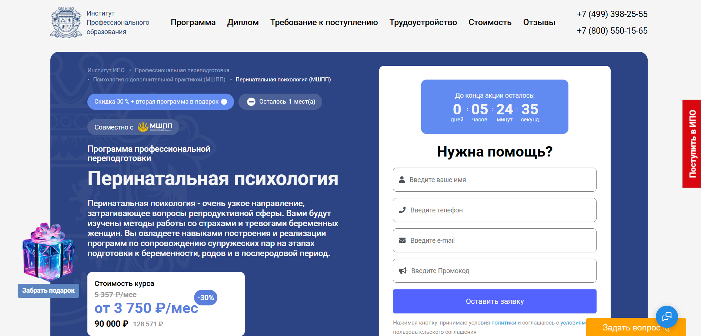- ✅ Официальный сайт: ipo.msk.ru
- 💸 Цена обучения: от 90 000 ₽ (со скидкой – ).
- 💳 Рассрочка:от 3 750 ₽/мес до 36 месяцев, без переплат.
- 📚 Формат: дистанционный формат: видеолекции, практические задания, тесты, вебинары, кейсы, супервизии, чат с ментором.
- ⏳ Продолжительность: 6 месяцев (560 академических часов).
- 📜 Документ: диплом о профессиональной переподготовке, международный диплом MBA.
- 📝 Трудоустройство: карьерный центр, сопровождение резюме, подготовка к собеседованиям, база вакансий.
- 🔷 Для кого подходит курс: специалисты в сфере психологии, медицины, родительства, начинающие и практикующие консультанты, интересующиеся детско-родительскими отношениями.
Особенности:
Курс разработан совместно с Московской школой практической психологии и охватывает ключевые аспекты перинатальной и репродуктивной психологии. Студенты изучают методы сопровождения женщин в период беременности, родов и послеродового восстановления. Обучение проходит в удобном дистанционном формате с гибким графиком. Акцент делается на развитие практических навыков консультирования и поддержки, включая работу с перинатальными потерями, тревожными состояниями и формированием ранней привязанности. Программа ориентирована на формирование профессиональных компетенций, необходимых перинатальному психологу. Обучение доступно для слушателей с высшим и средним профессиональным образованием. После завершения курса выдается диплом, соответствующий государственным стандартам.
Чему учатся студенты:
- Изучают психологические аспекты беременности, родов и послеродового периода.
- Осваивают методы психологической поддержки женщин в перинатальный период.
- Учатся консультировать по вопросам материнства, семейных кризисов и эмоциональной адаптации.
- Развивают навыки диагностики тревожных и депрессивных состояний.
- Понимают психофизиологию беременности и влияние на психику женщины.
- Приобретают опыт практической работы с семьями и будущими родителями.
Преподаватели:
- Инна Леонидовна Кылымник — гештальт-терапевт, супервизор, семейный системный терапевт.
- Ирина Михайловна Осипенко — кандидат психологических наук, доцент, практический психолог.
- Ирина Германовна — перинатальный и семейный психолог, член ассоциации когнитивно-поведенческих психотерапевтов.
Преимущества:
- Официальный диплом и международный сертификат MBA.
- Плотная практика: супервизии, интервизии, разбор кейсов.
- Гибкий дистанционный формат обучения без отрыва от работы.
- Доступ к профессиональному сообществу выпускников и преподавателей.
- Развитие навыков сопровождения женщин в одном из самых важных периодов жизни.
- Поддержка на всех этапах — от зачисления до трудоустройства.
- Углубленное изучение психологических аспектов репродуктивной сферы.
- Современные подходы к консультированию и терапии в перинатальной практике.
Отзывы учеников:
По данным независимых площадок, 87% выпускников ИПО отмечают, что программа превзошла их ожидания. Среди ключевых плюсов студенты выделяют насыщенность учебных модулей, квалификацию преподавателей, удобную организацию дистанционного формата, быструю обратную связь и практическую направленность.
Перейти на официальный сайт курса8. Перинатальная психология с присвоением квалификации перинатального психолога — Национальный центральный институт развития дополнительного образования

- ✅ Официальный сайт: ncrdo.ru
- 💸 Цена: 42 200 ₽ (вместо 54 600 ₽ )
- 💳 Рассрочка: от 1 172 ₽/мес на 36 месяцев
- 📚 Формат: дистанционный формат — видеолекции, тесты, практические задания, вебинары, доступ к ЭБС и ЛитРес
- ⏳ Продолжительность: 6 месяцев (1020 часов)
- 📜 Документ: диплом о профессиональной переподготовке с регистрацией в ФИС ФРДО
- 📝 Трудоустройство: HR-консультации, помощь в карьерном старте, рекомендация по трудоустройству
- 🔷 Для кого подходит курс: для специалистов с высшим или средним профессиональным образованием в сфере психологии, медицины, педагогики, а также студентов профильных вузов
Особенности:
Курс построен на изучении практической перинатальной психологии и охватывает ключевые аспекты беременности, родов и послеродового периода. Обучение проходит в дистанционном формате, что позволяет совмещать его с работой. Используются современные методы дистанционных образовательных технологий, предоставляется доступ к библиотеке вебинаров и учебных материалов. Слушатели изучают клиническую психологию, методы психотерапии, психологическое консультирование и диагностику. В рамках подготовки формируются практические навыки сопровождения женщин на всех этапах беременности. Программа включает работу с перинатальными утратами, сопровождение женщин с бесплодием и оказание помощи несовершеннолетним матерям. Поддержка преподавателей и доступ к системе СДО обеспечивают качественное обучение с возможностью получить диплом государственного образца.
Чему учатся студенты:
- Изучают основы перинатальной психологии и ее теоретические подходы
- Осваивают методы психологической помощи при перинатальных потерях
- Получают навыки консультирования беременных женщин и семей
- Разбирают аспекты репродуктивной психологии и психотерапии при бесплодии
- Проходят обучение по методам арт-терапии и психокоррекции в репродуктивной сфере
- Учатся проводить онлайн-консультации и работать с клиентами дистанционно
- Изучают аспекты психологии материнства, постродовых состояний и утрат
Преподаватели:
- Мельникова Елена Васильевна — опыт научно-практической деятельности с 2010 года
- Тышкевич Марина Юрьевна — опыт научно-практической деятельности с 2006 года
- Шевченко Дария Игоревна — опыт научно-практической деятельности с 2018 года
- Салихова Мария Романовна — опыт научно-практической деятельности с 2007 года
Преимущества:
- Обучение в удобных форматах с доступом 24/7 к материалам
- Возможность совмещать обучение с основной деятельностью
- Поддержка HR-эксперта для карьерного старта
- Документы вносятся в ФИС ФРДО, что подтверждает легитимность диплома
- Обратная связь от преподавателей на всех этапах обучения
- Возможность обучаться из любого региона
- Доступ к библиотеке ЛитРес и учебным материалам без ограничений
- Выгодная рассрочка на 36 месяцев без скрытых условий
Отзывы учеников:
По отзывам студентов на Яндекс и Google, чаще всего выделяют высокое качество образовательных программ, понятную подачу материала и удобство дистанционного обучения. Студенты довольны практической направленностью курсов и возможностью применять полученные знания в реальной работе. Отмечают помощь преподавателей, быстрое оформление документов и поддержку на всех этапах обучения.
Перейти на официальный сайт курса9. Перинатальная психология с присвоением квалификации «Перинатальный психолог» – Центральная академия профессиональной переподготовки и повышения квалификации кадров
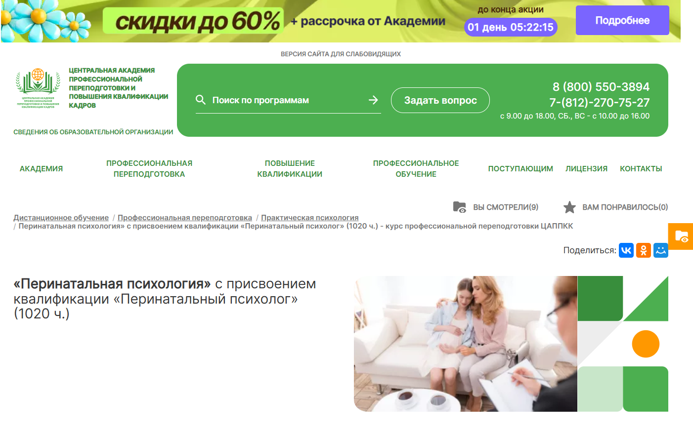- ✅ Официальный сайт: appkk.ru
- 💸 Цена: 36 800 ₽ (скидка 33%, полная цена 54 600 ₽)
- 💳 Рассрочка: до 36 месяцев, от 1 022 ₽ в месяц, без процентов
- 📚 Формат: дистанционное обучение: лекции, тесты, вебинары, задания
- ⏳ Продолжительность: 6 месяцев (1020 часов)
- 📜 Документ: диплом о профессиональной переподготовке, регистрация в ФИС ФРДО
- 📝 Трудоустройство: поддержка HR-наставника, рассылка вакансий, консультации
- 🔷 Для кого подходит курс: лица со средне-профессиональным или высшим образованием, студенты колледжей и вузов
Особенности:
Курс охватывает ключевые аспекты перинатальной психологии, включая сопровождение беременности, психологические особенности послеродового периода и работу с перинатальными потерями. Обучение проводится в дистанционном формате с использованием современных образовательных технологий. Студенты получают бессрочный доступ ко всем материалам и вебинарам. Все документы о квалификации официально регистрируются в государственном реестре. Предусмотрена техподдержка без выходных с 9:00 до 21:00. В курс включены практические задания и консультации с преподавателями. Участники учатся совмещать обучение с работой благодаря гибкому графику.
Чему учатся студенты:
- Изучают психологические аспекты беременности, родов и послеродового периода
- Осваивают методы психологической помощи беременным и семьям
- Приобретают навыки консультирования в области перинатальных утрат
- Понимают клиническую и репродуктивную психологию
- Развивают практические навыки сопровождения женщин на всех этапах материнства
- Изучают дистанционные методы диагностики и поддержки
Преподаватели:
- Анастасия Регнер — HR-наставник, бизнес-тренер, участник международных форумов, специалист по стратегическим коммуникациям
Преимущества:
- Официальная регистрация дипломов в ФИС ФРДО
- Бессрочный доступ к библиотеке вебинаров
- Гибкий формат обучения с возможностью совмещать с работой
- Индивидуальный подход и поддержка куратора
- Качественные учебные материалы, адаптированные под дистанционную форму
- Поддержка 7 дней в неделю
- Доставка диплома по почте с отслеживанием
- Возможность учиться из любой точки страны
Отзывы учеников:
Слушатели высоко оценивают доступность материалов, понятность подачи, полезность практических заданий и реальную помощь в поиске работы после получения диплома. Часто отмечают удобную платформу, постоянную поддержку и прозрачные условия оплаты.
Перейти на официальный сайт курса10. «Перинатальная психология» с присвоением квалификации «Перинатальный психолог» – Национальная академия дополнительного профессионального образования
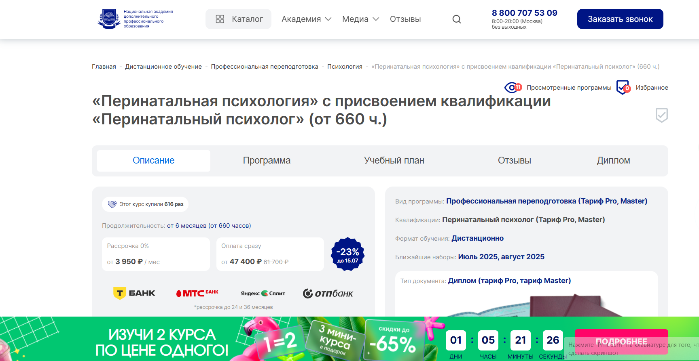
- ✅ Официальный сайт: nadpo.ru
- 💸 Цена: от 47 400 ₽ (со скидкой –; полная цена 61 700 ₽)
- 💳 Рассрочка: от 3 950 ₽/мес., до 24 и 36 месяцев, 0%
- 📚 Формат: дистанционный формат: видеолекции, задания, супервизии, разбор кейсов, консультации
- ⏳ Продолжительность: от 6 месяцев (660+ академических часов)
- 📜 Документ: диплом о профессиональной переподготовке, действующий по всей РФ
- 📝 Трудоустройство: поддержка от HR-наставника, предложения от партнёров во время обучения
- 🔷 Для кого подходит курс: для специалистов с высшим или средним профессиональным образованием, желающих работать в сфере перинатальной и репродуктивной психологии
Особенности:
Курс в удобном дистанционном формате подходит как для новичков, так и для опытных специалистов. Благодаря акценту на практическую перинатальную подготовку, студенты осваивают аспекты перинатальной поддержки уже во время прохождения программы. Программа включает работу с реальными кейсами, групповую супервизию и отработку в ролях терапевта, клиента и наблюдателя. Бонусом предоставляется доступ к ЛитРес и Библиоклубу, а также возможность получения кэшбэка. Слушатели изучают психологические аспекты беременности, родов и послеродового восстановления. Выдается диплом установленного образца. Процесс обучения построен на современных методиках и удобных образовательных платформах.
Чему учатся студенты:
- Оказывать психологическую поддержку на всех этапах беременности
- Работать с перинатальными потерями и бесплодием
- Сопровождать семьи в процессе ЭКО
- Владеть навыками консультирования беременных
- Понимать репродуктивные проблемы и особенности послеродового состояния
- Использовать методы психотерапии в перинатальной практике
- Применять арт-терапию и другие методы психологической коррекции
Преподаватели:
- Тарасов Сергей Васильевич — кандидат психологических наук, доцент, стаж с 2000 года
- Егорова Наталья Николаевна — кандидат психологических наук, 22 года практики
- Челнокова Ирина Александровна — кандидат психологических наук, член Российской ассоциации КПТ
- Санжапова Эльмира Викторовна — кандидат педагогических наук, доцент, стаж с 2005 года
Преимущества:
- Дистанционный формат — возможность совмещать обучение с работой
- Более 30% практики в процессе обучения
- Диплом соответствует требованиям ФГОС и признается в РФ
- Поддержка в трудоустройстве ещё во время курса
- Регулярные консультации с преподавателями
- Обратная связь по каждому заданию
- Возможность начать карьеру в частной практике или медцентре
- Удобная система рассрочки без переплат
Отзывы учеников:
Выпускники отмечают качественное дистанционное обучение, высокую вовлеченность преподавателей и удобную платформу. Большинство студентов довольны объемом практики, возможностью получить обратную связь и совмещать обучение с работой. Также положительно оценивается поддержка в поиске первых клиентов и карьерное сопровождение.
Перейти на официальный сайт курса11. Практическая перинатальная психология. Социально-психологическое сопровождение беременности, родов и послеродового периода – Национальная академия дополнительного профессионального образования
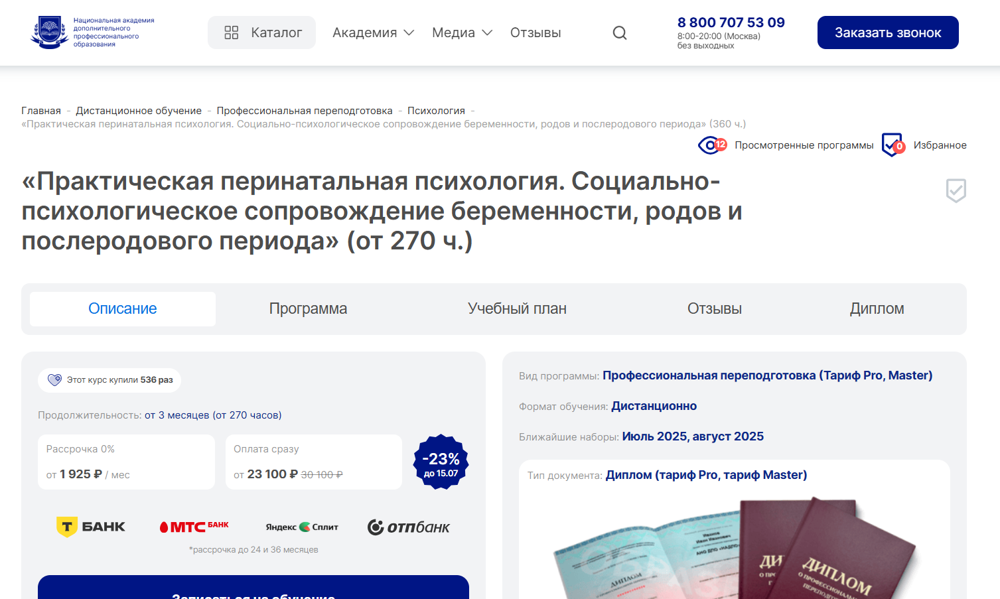
- ✅ Официальный сайт: nadpo.ru
- 💸 Цена:от 23 100 ₽ по запросу на сайте, действует акция 2 курса по цене одного
- 💳 Рассрочка: доступна от 1 925 ₽/мес, подробности уточняются при регистрации
- 📚 Формат: дистанционный формат: видеолекции, тесты, домашние задания
- ⏳ Продолжительность: от 270 до 360 академических часов
- 📜 Документ: выдается диплом о профессиональной переподготовке (тарифы Pro и Master)
- 📝 Трудоустройство: программа способствует расширению профессиональных компетенций, полезна для практики в перинатальных центрах и частной работе
- 🔷 Для кого подходит курс: для клинических и перинатальных психологов, специалистов по репродуктивной психологии, а также всех, кто хочет получить навыки консультирования в перинатальной сфере
Особенности:
Курс подходит для специалистов, стремящихся углубить знания в области репродуктивной и клинической психологии. В дистанционном обучении акцент сделан на изучении психологических аспектов беременности, родов и послеродового периода. Удобные форматы позволяют совмещать обучение с работой. В ходе подготовки особое внимание уделяется перинатальным утратам, психологическому сопровождению женщин, методам психотерапии и консультированию. Все учебные материалы доступны онлайн в любое время. Поддержка кураторов и практические задания обеспечивают качественное усвоение материала. По завершении обучения выдается диплом, подтверждающий профессиональную квалификацию.
Чему учатся студенты:
- Анализировать психологическое состояние женщин в разные периоды беременности
- Оказывать психологическую поддержку при перинатальных потерях
- Применять методы психотерапии в работе с будущими родителями
- Проводить консультирование беременных женщин и женщин в послеродовом периоде
- Изучать основы репродуктивной психологии и аспекты родительства
Преподаватели:
- Зайцева Галина Анатольевна — кандидат психологических наук, доцент, практикующий клинический психолог
- Орлова Елена Сергеевна — перинатальный психолог, специалист по сопровождению беременности и родов
Преимущества:
- Гибкий дистанционный формат с возможностью изучать материалы в удобное время
- Курс подходит для специалистов с высшим образованием в любой сфере
- Практические задания ориентированы на реальные ситуации консультирования
- Доступ к учебным материалам и платформе 24/7
- Выдаётся официальный диплом о переподготовке
- Возможность изучать два курса по цене одного
- Подходит для специалистов, желающих сменить профессию или углубить специализацию
- Поддержка опытных кураторов и консультации в процессе обучения
Отзывы учеников:
Студенты высоко оценивают удобство дистанционного формата, доступность материалов и поддержку преподавателей. Часто отмечают, что обучение помогает освоить навыки практического консультирования и психологической помощи беременным и родителям. Также положительно выделяют гибкие сроки прохождения курсов и возможность совмещать обучение с основной деятельностью.
Перейти на официальный сайт курса12. Перинатальный психолог. Социально-психологическое сопровождение беременности, родов и послеродового периода — АНО «НИИДПО»
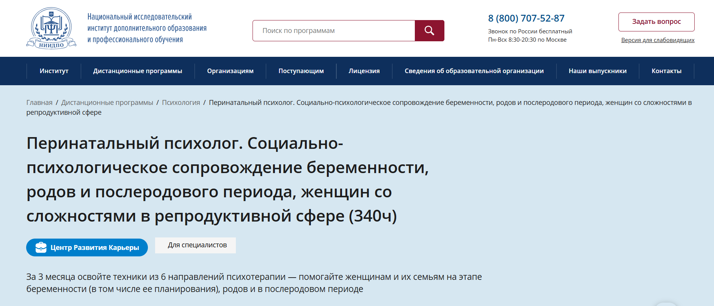- ✅ Официальный сайт: niidpo.ru
- 💸 Цена: 19 300 ₽ при оплате (скидка 3 900 ₽)
- 💳 Рассрочка: 0% на 12 месяцев от 1 935 ₽ в месяц без первоначального взноса
- 📚 Формат: дистанционные курсы с видеоуроками, вебинарами, тестами, практическими заданиями и мобильным приложением
- ⏳ Продолжительность: 12 недель (3 месяца)
- 📜 Документ: диплом о профессиональной переподготовке установленного образца
- 📝 Трудоустройство: поддержка Центра развития карьеры, помощь в открытии частной практики
- 🔷 Для кого подходит курс: психологам, врачам, специалистам по работе с семьями, а также интересующимся сферой материнства и репродуктивной психологии
Особенности:
Программа дистанционного образования помогает получить квалификацию в востребованной сфере — поддержке женщин на всех этапах репродуктивного пути. Студенты изучают аспекты перинатальной психологии, включая перинатальные утраты, эмоциональные состояния и послеродовые депрессии. Курс дает практические знания, которые можно применять как в частной практике, так и в учреждениях. Учебный процесс проходит в удобных форматах, с доступом к вебинарам, библиотеке и экспертной поддержке. После завершения обучения слушатели получают бессрочный доступ к материалам, а также могут участвовать в супервизиях и карьерных консультациях.
Чему учатся студенты:
- Оказывать психологическую помощь в период беременности и родов
- Работать с тревожными состояниями и страхами у будущих матерей
- Диагностировать послеродовую депрессию и оказывать профилактическую помощь
- Понимать особенности диады «мать-дитя» и формирование привязанности
- Использовать методы психотерапии при репродуктивных трудностях
- Сопровождать женщин при перинатальных потерях
Преподаватели:
- Полуэктова Ольга Геннадьевна — преподаватель психологии, эксперт в области перинатальной поддержки
Преимущества:
- Дистанционный формат без необходимости посещения учебного центра
- Бессрочный доступ к учебным материалам после окончания
- Обширная база вебинаров по психологии (13000+ записей)
- Поддержка карьеры и консультации по продвижению в профессии
- Доступное обучение с возможностью рассрочки без переплат
- Подготовка к частной практике и работа с реальными кейсами
- Мобильное приложение для удобного изучения материалов
Отзывы учеников:
Слушатели чаще всего отмечают удобную организацию дистанционного обучения, большое количество практических заданий и доступ к богатой библиотеке вебинаров. Отдельно подчеркивают поддержку преподавателей и возможность сразу применять полученные навыки в практике.
Перейти на официальный сайт курса13. Перинатальный тренинг и послеродовое восстановление — АНО «НИИДПО»
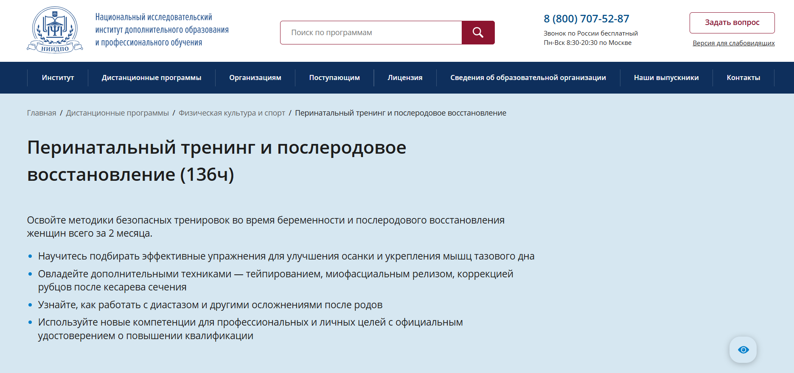- ✅ Официальный сайт: niidpo.ru
- 💸 Цена: 13 900 ₽ ( скидка 4 000 ₽)
- 💳 Рассрочка: от 3 475 ₽ каждые 2 недели без комиссии
- 📚 Формат: дистанционное обучение, видеолекции, онлайн-вебинары, практические задания, тестирование, доступ к материалам после окончания
- ⏳ Продолжительность: 7 недель (возможно ускоренное — 5 недель)
- 📜 Документ: удостоверение о повышении квалификации с гослицензией
- 📝 Трудоустройство: повышение квалификации и расширение профессиональных компетенций
- 🔷 Для кого подходит курс: для женщин до и после родов, фитнес-тренеров, доул, специалистов ЛФК, клинических и перинатальных психологов
Особенности:
Курс охватывает важнейшие аспекты перинатальной подготовки и восстановления, включая методики работы с мышцами тазового дна, диастазом, рубцами после кесарева сечения. Уделено внимание психологическому сопровождению женщин на этапе беременности и в послеродовом периоде. Обучение проходит в дистанционном формате, что удобно для специалистов, совмещающих работу и обучение. Студенты получают практические навыки и официальные документы после успешного окончания курса. Кураторы сопровождают на всех этапах прохождения программы, а доступ к учебным материалам остается бессрочным.
Чему учатся студенты:
- Работать с диастазом и восстановлением после родов
- Применять методы тейпирования и миофасциального релиза
- Подбирать упражнения по триместрам и в послеродовом периоде
- Корректировать рубцы после кесарева сечения
- Понимать аспекты беременности и физиологии в разные периоды
- Использовать техники для снижения болевого синдрома
Преподаватели:
- Полякова Юлия Александровна — специалист по восстановлению женщин после родов, мастер-тренер, резидент фитнес-клуба
- Корнеева Светлана Александровна — фитнес-инструктор с 20-летним опытом, преподаватель перинатальной йоги
- Сергунина Вероника Владимировна — дипломированный нутрициолог
Преимущества:
- Дистанционный формат подходит для любых графиков
- Выдается удостоверение установленного образца
- Доступ к 13 000+ вебинарам в архиве и бонусные онлайн-семинары
- Программа соответствует профессиональным стандартам
- Практические задания с проверкой и поддержкой кураторов
- Бессрочный доступ к учебным материалам
- Сертификат компетенций с перечислением освоенных функций
- Поддержка на каждом этапе прохождения курса
Отзывы учеников:
В отзывах студенты отмечают качественное дистанционное обучение, насыщенный учебный план, поддержку преподавателей и кураторов. Подчеркивают актуальность программы для перинатальных психологов и практиков. Отмечают удобный формат прохождения курсов и полезность вебинаров, которые помогают углубить знания в практической перинатальной работе.
Перейти на официальный сайт курса14. Практическая перинатальная психология. Социально-психологическое сопровождение беременности, родов и послеродового периода — Национальный центральный институт развития дополнительного образования
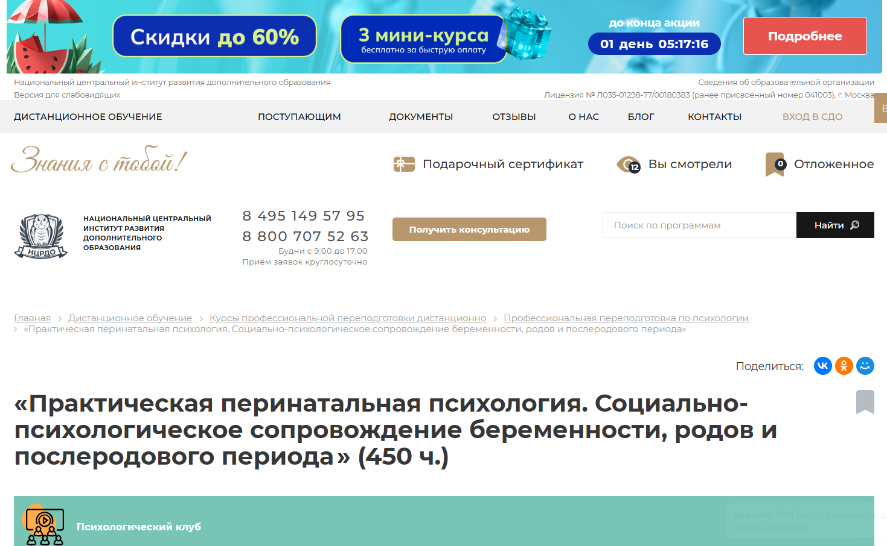
- ✅ Официальный сайт: ncrdo.ru
- 💸 Цена обучения: 26 500 ₽ (вместо 38 600 ₽ )
- 💳 Рассрочка: 2 208 ₽/мес на 12 месяцев
- 📚 Формат: дистанционный формат, аудиолекции, вебинары, практические задания, тесты, электронные материалы, доступ к ЛитРес и Библиоклуб
- ⏳ Продолжительность: 4 месяца (450 часов)
- 📜 Документ: выдается диплом о профессиональной переподготовке
- 📝 Трудоустройство: помощь в профессиональном старте, HR-консультации, регистрация документов в ФРДО
- 🔷 Для кого подходит курс: клиническим психологам, педагогам, специалистам в сфере репродуктивного здоровья и тем, кто хочет получить новую востребованную профессию
Особенности:
Программа разработана для освоения профессиональных компетенций в перинатальной сфере. Обучение проходит в дистанционном формате, что удобно для совмещения с работой или другими занятиями. Студенты изучают аспекты перинатальной психологии, включая сопровождение женщин в период беременности, родов и после рождения ребёнка. Курс охватывает темы психологического консультирования при перинатальных потерях и подготовки к материнству. Учебный процесс организован в комфортном ритме, практические навыки закрепляются через задания. Доступ к материалам остается даже после завершения обучения. Курс адаптирован под требования ФГОС и профессиональных стандартов.
Чему учатся студенты:
- Проводить психологическую поддержку беременных женщин на разных этапах
- Изучать психологические аспекты беременности, родов и послеродового периода
- Работать с перинатальными потерями и послеродовыми депрессиями
- Осваивать методы психотерапии и психологического сопровождения
- Развивать навыки консультирования в рамках перинатальной и клинической психологии
- Готовить женщин к родительству и снижать уровень тревожности
Преподаватели:
- Мельникова Елена Васильевна — научно-практическая деятельность с 2010 года
- Тышкевич Марина Юрьевна — опыт с 2006 года
- Шевченко Дария Игоревна — с 2018 года в психологии
- Салихова Мария Романовна — практикует с 2007 года
Преимущества:
- Дистанционное обучение в удобных форматах
- Выдается диплом, зарегистрированный в ФРДО
- Гибкий график, подходящий для занятых специалистов
- Доступ к учебным материалам на постоянной основе
- Психологическое сопровождение будущих мам по всей репродуктивной линии
- Практико-ориентированная программа с проработкой реальных кейсов
- Актуальные методы психотерапии и диагностики
- Возможность начать работу в перинатальных центрах и частной практике
Отзывы учеников:
Слушатели отмечают насыщенную программу, актуальность тем и удобный дистанционный формат. Особо хвалят преподавателей-практиков, доступ к вебинарам и дополнительные материалы. Многие упоминают возможность совмещать обучение с работой и высокую ценность полученных навыков в профессиональной деятельности.
Перейти на официальный сайт курса15. Перинатальная психология — Научный центр профессионального образования (НЦПО)
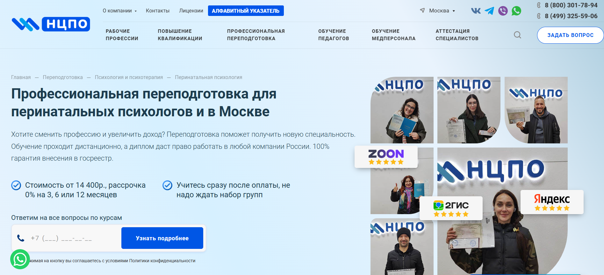
- ✅ Официальный сайт: ncpo.ru
- 💸 Цена обучения: от 19 800 ₽ (скидка 3 000 ₽ при оплате в день заявки)
- 💳 Рассрочка:1 650 ₽/мес 0% на 3, 6 или 12 месяцев
- 📚 Формат: дистанционные образовательные курсы, видеолекции, тесты, практические задания
- ⏳ Продолжительность: от 250 до 1600+ академических часов
- 📜 Документ: диплом о профессиональной переподготовке, внесение в ФИС ФРДО
- 📝 Трудоустройство: подтверждение квалификации и права работать в учреждениях России
- 🔷 Для кого подходит курс: для психологов с ВО или СПО по психологии или клинической психологии
Особенности:
Курс рассчитан на подготовку специалистов в области психологического сопровождения беременности, родов и послеродового периода. Обучение проходит в дистанционном формате, что позволяет совмещать его с работой. Программа включает теоретические и практические модули, направленные на развитие профессиональных навыков консультирования, диагностики и оказания помощи в ситуациях перинатальных потерь и репродуктивных трудностей. Документ о переподготовке вносится в государственный реестр и действует бессрочно. Курс ориентирован на изучение психологических аспектов материнства, психологии родительства, сопровождения женщин в репродуктивной сфере. Поддержка и обратная связь от кураторов помогает закрепить знания и подготовиться к практике.
Чему учатся студенты:
- Оказывать психологическую поддержку беременным и их партнерам
- Понимать аспекты перинатальной и репродуктивной психологии
- Проводить консультации при перинатальных потерях
- Развивать навыки психологического консультирования и диагностики
- Изучать методы психотерапии, применимые в клинической практике
- Проводить сопровождение беременности и семейного консультирования
Преподаватели:
- Терешков Александр Леонидович — Генеральный директор, эксперт в области дистанционного образования
- Грезнева Диана — Руководитель направления психологии и психотерапии
- Малкова Анна — Методист курсов, психолог с практическим опытом
Преимущества:
- Доступ к обучению 24/7 на онлайн-платформе
- Возможность совмещать обучение с работой
- Документ государственного образца с внесением в реестр
- Поддержка кураторов и оперативные ответы на вопросы
- Варианты оплаты с рассрочкой без переплат
- Бессрочный диплом без указания формы обучения
- Практическая направленность с кейсами из реальной практики
- Психологическая база для клинического применения
Отзывы учеников:
Студенты часто отмечают удобство дистанционного формата, доступные материалы и практическую направленность. Положительные отзывы касаются поддержки от менеджеров и кураторов, возможности проходить обучение в собственном темпе и получения официального диплома, который принимается работодателями по всей России.
Перейти на официальный сайт курса- Курс направлен на освоение практических навыков перинатальных психологов и клинического психолога с уклоном в репродуктивную сферу.
- Формат обучения – дистанционный, материалы доступны в удобных форматах и можно совмещать обучение с работой.
- Изучаются психологические аспекты беременности, перинатальных утрат, сопровождения беременности и психология материнства.
- В курс включены методы психологической диагностики, психотерапии, консультирования беременных и сопровождения женщин в послеродовом периоде.
- Уделяется внимание освоению навыков консультирования и развитию профессиональных компетенций в области перинатальной и клинической психологии.
- После прохождения обучения выдаются удостоверения установленного образца о профессиональной переподготовке.
- Студенты получают теоретическую и практическую подготовку с акцентом на психологическую поддержку будущих родителей.
- Дистанционное обучение организовано с использованием современных образовательных технологий и платформ.
- Подходит для специалистов, желающих получить дополнительную квалификацию в области психологического сопровождения беременности и родительства.
- Подборка книг подходит для прохождения профессиональной переподготовки в сфере перинатальной психологии.
- Материалы охватывают аспекты беременности, перинатальных потерь, материнства и репродуктивной психологии.
- Изучаются психологические аспекты родов, этапов беременности и взаимодействия в семье.
- Книги помогут клиническому психологу и специалистам по консультированию беременных развить практические навыки.
- Подходит для получения теоретической базы и освоения методов психологической помощи в перинатальных центрах.
- Можно использовать в дистанционном обучении или при изучении дополнительной профессиональной подготовки.
- Материалы включают современные подходы к психологическому сопровождению беременных и новорождённых.
- Изучение доступно в любом удобном формате — файлы размещены в открытом доступе.
- Рекомендуется для специалистов, интересующихся консультированием и поддержкой женщин в репродуктивной сфере.
- Консультирование женщин по вопросам тревожности и страхов перед родами
- Поддержка при репродуктивных трудностях, выкидышах, ЭКО
- Психологическая помощь при послеродовом стрессе или депрессии
- Формирование позитивной материнской идентичности
- Семейная терапия при конфликтах, связанных с ожиданием ребенка
- Развитие эмоциональной связи между родителями и младенцем
- Понимание этапов беременности, родов и послеродового периода
- Навыки диагностики и коррекции тревожных и депрессивных состояний
- Знания о влиянии психологического состояния матери на развитие плода
- Навыки ведения индивидуальных и семейных консультаций
- Понимание особенностей перинатальных потерь
- Умение работать с психосоматикой
- Средняя зарплата по России — от 60 000 до 120 000 рублей в месяц
- В частных клиниках и онлайн-консультировании доход может достигать 150 000 рублей и выше
- Высокий спрос в крупных городах: Москва, Санкт-Петербург, Казань, Екатеринбург
- Развитие телемедицины повышает возможности для удалённой практики
- Закончить вуз по специальности «Психология» или «Клиническая психология»
- Пройти дополнительное обучение или профессиональную переподготовку по перинатальной психологии (дистанционные и очные курсы)
- Участвовать в супервизиях и тематических семинарах для профессионального роста
- Родильные дома и перинатальные центры
- Женские консультации и поликлиники
- Центры планирования семьи
- Частные психологические центры
- Онлайн-платформы для телемедицины
- Эмпатия и чуткость
- Психологическая устойчивость
- Умение слушать и не осуждать
- Деликатность при обсуждении травмирующих тем
- Желание помогать и развиваться профессионально
- Рост онлайн-консультирования и курсов по подготовке к родам
- Интеграция психологов в команды роддомов и клиник
- Развитие программ поддержки после потери ребёнка
- Участие в образовательных и профилактических проектах
Бесплатные курсы по обучению на перинатального психолога
Перинатальная психология: дистанционный курс бесплатно – Институт практической психологии «Иматон»
✅ Официальный сайт: rutube.ru
Описание и особенности:
Перинатальная психология, бесплатно – Спроси психолога ВКонтакте
✅ Официальный сайт: vk.com
Описание и особенности:
Кто такой перинатальный психолог?
Перинатальный психолог — это специалист, работающий с женщинами (и их семьями) в период подготовки к беременности, во время беременности, родов и послеродового восстановления. Его основная задача — поддержка психологического состояния женщины, формирование здоровой привязанности между матерью и ребенком, а также профилактика и коррекция эмоциональных нарушений в перинатальный период.
Что делают перинатальные психологи и чем занимаются?
Работа перинатального психолога охватывает широкий спектр задач, связанных с эмоциональной поддержкой женщины в одном из самых важных периодов жизни. Они работают как индивидуально, так и с парами, иногда в сотрудничестве с акушерами, гинекологами и доулами.
Что должен знать и уметь перинатальный психолог?
Перинатальный психолог должен обладать обширными знаниями и навыками как в области психологии, так и физиологии беременности и родов. Он также обязан обладать высокой эмпатией, тактичностью и профессиональной этикой.
Востребованность и зарплаты перинатальных психологов в России
В условиях растущей осведомлённости женщин о важности психологического здоровья в период беременности профессия перинатального психолога становится всё более востребованной. В 2025 году эта специализация уверенно занимает свою нишу в частной и государственной медицинской сфере.
Как стать перинатальным психологом и где учиться?
Чтобы стать перинатальным психологом, необходимо пройти базовое психологическое образование и получить дополнительную квалификацию по перинатальной психологии.
Где работает перинатальный психолог?
Перинатальные психологи находят применение своим знаниям в различных учреждениях, как государственных, так и частных. Они также могут вести частную практику или работать онлайн.
Какие личные качества важны для перинатального психолога?
Помимо профессиональных знаний, для успешной работы важны определённые черты характера и установки, ведь работа включает поддержку в сложных и интимных ситуациях.
Перспективы развития профессии
С ростом популярности осознанного материнства и развитием практик психопрофилактики родов профессия перинатального психолога имеет большие перспективы. Всё больше родителей осознают важность психологической подготовки к рождению ребёнка, а потому спрос на услуги будет расти.
Что такое перинатальная психология и зачем нужно обучение в этой сфере?
Перинатальная психология — это раздел клинической и репродуктивной психологии, который изучает психологические аспекты беременности, родов, послеродового периода, а также вопросы, связанные с перинатальными потерями и поддержкой беременных женщин. Обучение в этой области необходимо для формирования профессиональных компетенций у специалистов, которые оказывают психологическое сопровождение будущим родителям, помогают справляться с кризисами, перинатальными утратами и послеродовыми депрессиями.
Кому подходит обучение по перинатальной психологии?
Обучение подходит клиническим психологам, психотерапевтам, медицинским и социальным работникам, а также педагогам и специалистам по семейному консультированию. Также курсы рекомендованы тем, кто планирует получить профессиональную переподготовку в сфере репродуктивной психологии и начать оказывать психологическую поддержку женщинам в период беременности и родов.
Какие темы охватывает программа обучения по перинатальной психологии?
Программы включают изучение основ перинатальной психологии, аспектов беременности, психологических особенностей материнства, репродуктивных проблем, послеродового периода, а также методов психотерапии и психологического консультирования в рамках перинатальных центров.
Где можно пройти дистанционное обучение?
Доступны дистанционные курсы и программы профессиональной переподготовки в ведущих институтах психологии и образовательных центрах. Обучение проводится в дистанционном формате с использованием современных образовательных платформ и вебинаров, что позволяет проходить обучение в любом удобном формате.
Какие документы выдаются по окончании обучения?
После успешного завершения обучения слушателям выдается диплом о профессиональной переподготовке, соответствующий требованиям ФГОС. В случае повышения квалификации — удостоверение установленного образца.
Какие навыки практической деятельности получают слушатели курсов на перинатального психолога?
Обучающиеся осваивают методы психологической диагностики, консультирования беременных, поддержки при перинатальных потерях, организации сопровождения беременности и индивидуальных консультаций. Программа включает практические задания и кейсы, направленные на развитие профессиональных навыков.
Какая форма обучения доступна?
Обучение доступно как в дистанционном обучении, так и в смешанном формате. Это позволяет совмещать обучение с работой и личной жизнью, проходить дистанционные курсы в любом удобном графике и получать качественное образование без отрыва от текущей деятельности.
Сколько длится курс по перинатальной психологии?
Сроки прохождения обучения зависят от программы. Обычно профессиональная переподготовка занимает от 4 до 12 месяцев, а курсы повышения квалификации — от 36 до 72 академических часов. Уточнить сроки обучения можно на сайте образовательного центра.
Какие требования к поступлению на курсы по перинатальной психологии?
Для зачисления на программу профессиональной переподготовки необходимо <strongвысшее образование в области психологии, педагогики, медицины или социальной работы. Для повышения квалификации допускаются слушатели с действующим профессиональным образованием.
Какие знания получают студенты в рамках программы?
Слушатели изучают психологические аспекты зачатия, беременности, родов и послеродового периода, репродуктивные технологии, методы психологической помощи при перинатальных потерях, особенности консультирования беременных, а также психологическую диагностику и методы психотерапии.
Можно ли проходить обучение в рассрочку?
Да, многие образовательные центры предоставляют возможность оплаты обучения в рассрочку. Это делает качественное обучение более доступным. Подробные условия рассрочки можно узнать при подаче заявки на обучение.
Какие форматы обучения на перинатального психолога наиболее удобны?
Удобные форматы обучения включают в себя дистанционные образовательные технологии, видеолекции, онлайн-тестирование, практические задания и обратную связь от преподавателей. Дистанционный формат позволяет учиться в любом удобном месте и темпе, получая качественные знания.
Какой результат можно получить после окончания курсов?
После прохождения курсов слушатели получают дипломы или удостоверения, развивают практические навыки консультирования, осваивают методы психотерапии и оказывают психологическую помощь беременным и их семьям. Это открывает возможности для успешной карьеры в перинатальных центрах, клиниках и частной практике.
Какие темы изучают в рамках практики?
В процессе практики студенты изучают основы перинатальной психологии, проводят анализ психологических аспектов различных периодов беременности, обучаются психологическому консультированию, осваивают методы психотерапии и диагностики в сфере репродуктивного здоровья.
Какие преимущества у дистанционного обучения перинатальной психологии?
Дистанционное обучение дает возможность совмещать обучение с профессиональной деятельностью, получать качественные знания от ведущих преподавателей, иметь доступ к учебным материалам в любой точке мира, проходить обучение в удобной форме и по доступной стоимости.
Как помогает обучение в работе с беременными женщинами?
После обучения специалист оказывает психологическую поддержку женщинам на всех этапах беременности, помогает справляться с послеродовыми депрессиями, репродуктивными проблемами, предоставляет консультации при перинатальных утратах и помогает формировать здоровое материнство.
Какие перспективы открывает диплом перинатального психолога?
Получение диплома о переподготовке по перинатальной психологии позволяет начать профессиональную практику, работать в перинатальных центрах, медицинских учреждениях, частной практике, оказывая поддержку беременным, семьям и новоиспечённым родителям.
------------------------------------------------
Реклама. Информация о рекламодателе по ссылкам в статье.